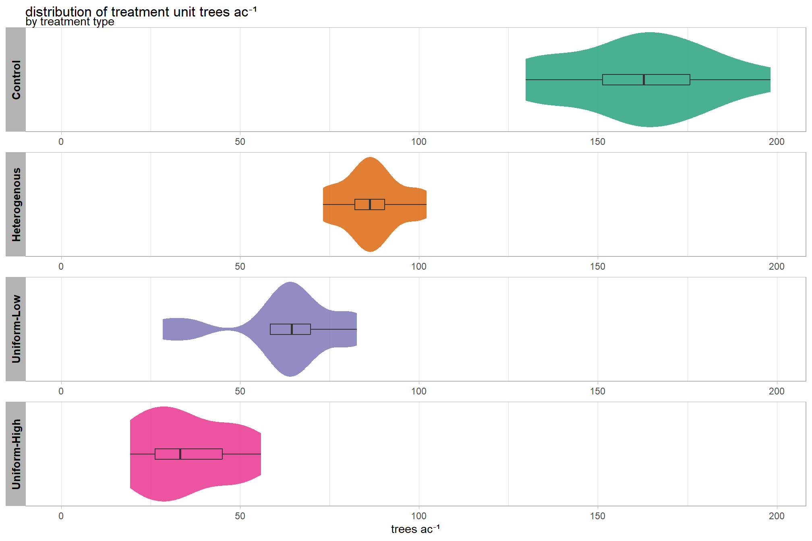
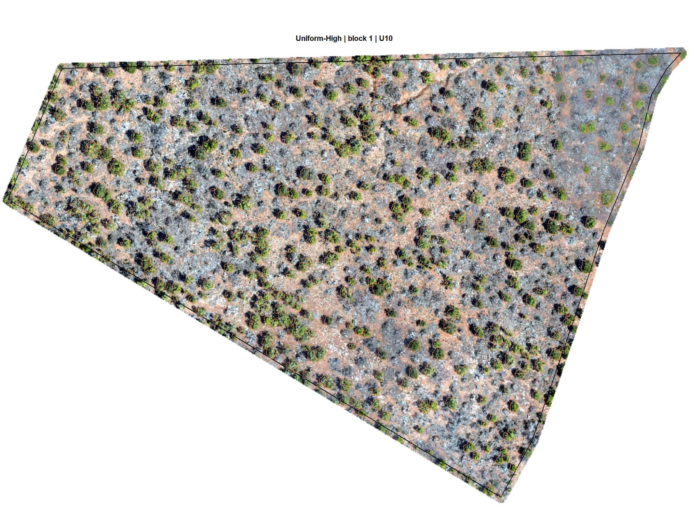
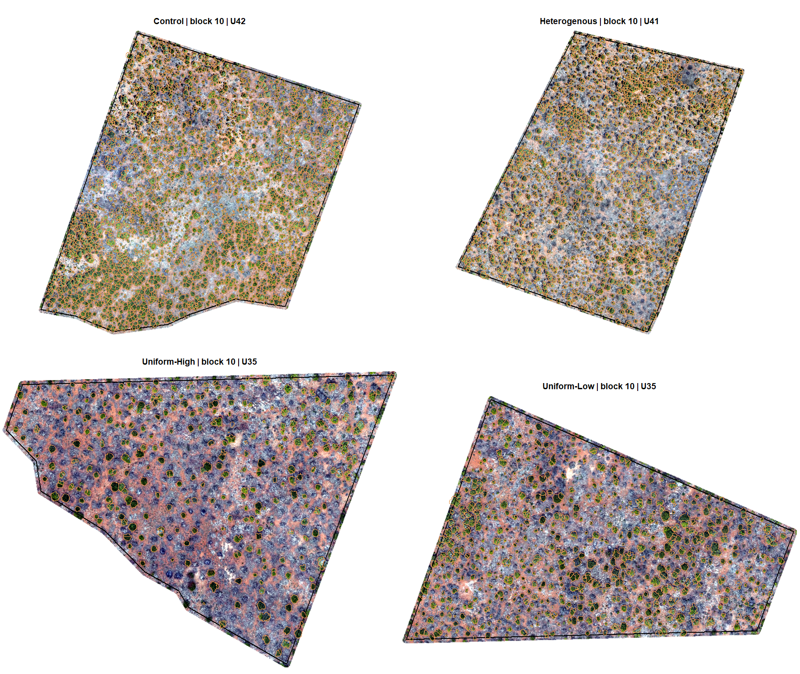

Section 5 Treatment Unit Silvicultural Summary
In this section, we’re going to aggregate the UAS-detected trees within the treatment units to produce silvicultural summaries.
using our cleaned UAS-detected trees data, how many trees per treatment unit?
treetops_sf %>%
sf::st_drop_geometry() %>%
dplyr::count(trtmnt_type, trtmnt_block, trtmnt_unit,trtmnt_unit_area_ha) %>%
dplyr::mutate(
trees_per_ha = n/trtmnt_unit_area_ha
, trtmnt_unit_area_ha = scales::comma(trtmnt_unit_area_ha,accuracy=0.1)
, n = scales::comma(n,accuracy=1)
, trees_per_ha = scales::comma(trees_per_ha,accuracy=0.1)
) %>%
recode_treatment_type_fn(ordered = T) %>%
kableExtra::kbl(
caption = "count trees by treatment unit"
, col.names = c(
"type","block","unit","ha"
, "# trees", "trees ha<sup>-1</sup>"
)
, escape = F
# , digits = 2
) %>%
kableExtra::kable_styling(font_size = 9.7) %>%
kableExtra::column_spec(seq(4,6,by=2), border_right = TRUE, include_thead = TRUE) %>%
kableExtra::collapse_rows(columns = 1, valign = "top") %>%
kableExtra::scroll_box(height = "8.4in")| type | block | unit | ha | # trees | trees ha-1 |
|---|---|---|---|---|---|
| Control | 1 | U11 | 11.5 | 4,483 | 388.1 |
| 10 | U42 | 8.3 | 2,921 | 350.0 | |
| 11 | U48 | 8.3 | 2,739 | 330.9 | |
| 12 | U34 | 9.2 | 4,522 | 489.4 | |
| 2 | U23 | 10.3 | 4,467 | 433.4 | |
| 3 | U21 | 8.1 | 3,523 | 435.4 | |
| 4 | U4 | 6.7 | 2,744 | 410.0 | |
| 5 | U38 | 8.6 | 3,432 | 399.2 | |
| 6 | U30 | 10.1 | 4,568 | 450.8 | |
| 7 | U46 | 8.6 | 3,463 | 404.9 | |
| 8 | U31 | 8.1 | 3,086 | 381.6 | |
| 9 | U54 | 10.3 | 3,316 | 320.4 | |
| Heterogenous | 1 | U40 | 9.1 | 1,825 | 200.1 |
| 10 | U41 | 8.2 | 1,808 | 220.5 | |
| 11 | U43 | 8.1 | 1,657 | 203.7 | |
| 12 | U55 | 9.2 | 2,320 | 252.0 | |
| 2 | U16 | 9.5 | 2,104 | 221.4 | |
| 3 | U26 | 9.0 | 1,621 | 180.7 | |
| 4 | U36 | 8.5 | 1,595 | 187.5 | |
| 5 | U39 | 8.3 | 1,760 | 211.8 | |
| 6 | U29 | 9.2 | 2,220 | 242.0 | |
| 7 | U44 | 8.6 | 1,810 | 210.3 | |
| 8 | U2 | 8.3 | 1,773 | 214.0 | |
| 9 | U53 | 8.4 | 1,934 | 229.2 | |
| Uniform-High | 1 | U10 | 5.2 | 620 | 119.8 |
| 10 | U35 | 4.4 | 389 | 87.7 | |
| 11 | U49 | 4.4 | 606 | 138.0 | |
| 12 | U32 | 5.1 | 264 | 52.3 | |
| 2 | U19 | 4.5 | 387 | 86.1 | |
| 3 | U18 | 4.1 | 284 | 69.2 | |
| 4 | U27 | 4.2 | 452 | 108.5 | |
| 5 | U37 | 5.6 | 440 | 78.2 | |
| 6 | U28 | 4.3 | 205 | 47.8 | |
| 7 | U45 | 4.3 | 222 | 51.7 | |
| 8 | U33 | 4.5 | 317 | 70.7 | |
| 9 | U52 | 4.1 | 510 | 124.4 | |
| Uniform-Low | 1 | U10 | 5.2 | 825 | 159.4 |
| 10 | U35 | 4.4 | 754 | 170.0 | |
| 11 | U49 | 4.4 | 896 | 204.0 | |
| 12 | U32 | 5.1 | 901 | 178.4 | |
| 2 | U19 | 4.5 | 712 | 158.5 | |
| 3 | U18 | 4.1 | 370 | 90.1 | |
| 4 | U27 | 4.2 | 601 | 144.3 | |
| 5 | U37 | 5.6 | 812 | 144.4 | |
| 6 | U28 | 4.3 | 668 | 155.7 | |
| 7 | U45 | 4.3 | 301 | 70.1 | |
| 8 | U33 | 4.5 | 723 | 161.2 | |
| 9 | U52 | 4.1 | 810 | 197.5 |
where are these units in space?
stand_boundary %>%
dplyr::rename(trtmnt_type=tretmnt) %>%
recode_treatment_type_fn(ordered = T) %>%
ggplot2::ggplot(
ggplot2::aes(color = ordered(block), fill = trtmnt_type)
)+
ggplot2::geom_sf(lwd = 2, alpha = 0.8) +
ggplot2::scale_fill_brewer(palette = "Dark2") +
# ggplot2::scale_color_viridis_d(option = "turbo") +
ggplot2::scale_color_manual(
values = viridis::turbo(n = length(unique(stand_boundary$block))) %>% sample()
) +
ggplot2::labs(fill = "treatment\ntype", color = "treatment\nblock") +
ggplot2::theme_void() +
ggplot2::guides(
fill = ggplot2::guide_legend(
override.aes = list(
color = NA, shape = 15, linetype = 0, size = 6, alpha = 1
)
)
, color = ggplot2::guide_legend(
override.aes = list(
fill = NA, shape = 15, size = 6, alpha = 1
)
)
)
5.1 Function to Calculate Silviclutural Metrics
let’s make a function to summarize the data and create common silvicultural metrics within our stand boundary
###################################################################################
# define a function to convert columns in data frame from metric to imperial
# see:
# https://www.forestnb.com/archives/forest-nb-news/resources/conversions/
# https://www.ars.usda.gov/is/np/agbyproducts/agbyappendix.pdf
###################################################################################
calc_imperial_units_fn <- function(df) {
df %>%
# convert to imperial units
dplyr::mutate(
dplyr::across(
.cols = tidyselect::ends_with("_cm")
, ~ .x * 0.394
, .names = "{.col}_in"
)
, dplyr::across(
.cols = tidyselect::ends_with("_m")
, ~ .x * 3.281
, .names = "{.col}_ft"
)
, dplyr::across(
.cols = tidyselect::ends_with("_m2_per_ha")
, ~ .x * 4.359
, .names = "{.col}_ftac"
)
, dplyr::across(
.cols = tidyselect::ends_with("_kg_per_ha")
, ~ .x * 0.892178
, .names = "{.col}_lbsac"
)
, dplyr::across(
.cols = tidyselect::ends_with("_per_ha") &
!tidyselect::ends_with("_m2_per_ha") &
!tidyselect::ends_with("_kg_per_ha")
, ~ .x * 0.405
, .names = "{.col}_ac"
)
, dplyr::across(
.cols = tidyselect::ends_with("_area_ha")
, ~ .x * 2.471
, .names = "{.col}_ac"
)
, dplyr::across(
.cols = tidyselect::ends_with("kg_per_m2")
, ~ .x * 0.20482
, .names = "{.col}_lbsft2"
)
, dplyr::across(
.cols = tidyselect::ends_with("kg_per_m3")
, ~ .x * 0.0624
, .names = "{.col}_lbsft3"
)
, dplyr::across(
.cols = tidyselect::ends_with("_m2") & !tidyselect::ends_with("per_m2")
, ~ .x * 10.764
, .names = "{.col}_ft2"
)
) %>%
dplyr::rename_with(
.fn = function(x){dplyr::case_when(
stringr::str_ends(x,"_cm_in") ~ stringr::str_replace(x,"_cm_in","_in")
, stringr::str_ends(x,"_m_ft") ~ stringr::str_replace(x,"_m_ft","_ft")
, stringr::str_ends(x,"_m2_per_ha_ftac") ~ stringr::str_replace(x,"_m2_per_ha_ftac","_ft2_per_ac")
, stringr::str_ends(x,"_kg_per_ha_lbsac") ~ stringr::str_replace(x,"_kg_per_ha_lbsac","_lbs_per_ac")
, stringr::str_ends(x,"_per_ha_ac") ~ stringr::str_replace(x,"_per_ha_ac","_per_ac")
, stringr::str_ends(x,"_area_ha_ac") ~ stringr::str_replace(x,"_area_ha_ac","_area_ac")
, stringr::str_ends(x,"_kg_per_m2_lbsft2") ~ stringr::str_replace(x,"_kg_per_m2_lbsft2","_lbs_per_ft2")
, stringr::str_ends(x,"_kg_per_m3_lbsft3") ~ stringr::str_replace(x,"_kg_per_m3_lbsft3","_lbs_per_ft3")
, stringr::str_ends(x,"_m2_ft2") ~ stringr::str_replace(x,"_m2_ft2","_ft2")
, TRUE ~ x
)}
)
}
###################################################################################
### stand-level summaries
###################################################################################
calc_silv_metrics <- function(tree_list, stand_area_ha = NULL, study_boundary = NULL, calc_imperial_units = F) {
# get study area
if(!is.null(study_boundary)){
# bounds check
if(
!inherits(study_boundary,"sf")
&& !inherits(study_boundary,"sfc")
){stop("study_boundary must be sf class object")}
if(is.na(sf::st_crs(study_boundary))){stop("study_boundary does not have a CRS")}
if(inherits(study_boundary,"sf") && nrow(study_boundary)!=1){
stop("study_boundary must only have a single record geometry")
}
if(inherits(study_boundary,"sfc") && length(study_boundary)!=1){
stop("study_boundary must only have a single record geometry")
}
if(
!all( sf::st_is(study_boundary, c("POLYGON","MULTIPOLYGON")) )
){
stop("study_boundary must contain POLYGON type geometry only")
}
# area
xxstand_area_ha <- study_boundary %>%
sf::st_area() %>%
as.numeric() %>%
`/`(10000)
}else if(is.numeric(stand_area_ha)){
xxstand_area_ha <- stand_area_ha[1]
}else{
stop("must provide `stand_area_ha` as numeric or `study_boundary` as sf object")
}
if(is.null(xxstand_area_ha) || is.na(xxstand_area_ha) || dplyr::coalesce(xxstand_area_ha,0)<=0){
stop("could not determine valid stand_area_ha")
}
# summarize tree list
if(!inherits(tree_list,"data.frame")){stop("tree_list must be data.frame class object")}
###### !!!!!!!!!!!!!!!!!!!!!!!!!!!!!!!!!!!!!!! NEED TO PUT IN CHECKS FOR COLUMNS USED
# see: cloud2trees::check_df_cols_all_missing()
if( !any(stringr::str_detect(names(tree_list), "landfire_crown_biomass_kg")) ){
tree_list <- tree_list %>% dplyr::mutate(landfire_crown_biomass_kg=as.numeric(NA))
}
if( !any(stringr::str_detect(names(tree_list), "cruz_crown_biomass_kg")) ){
tree_list <- tree_list %>% dplyr::mutate(cruz_crown_biomass_kg=as.numeric(NA))
}
if( !any(stringr::str_detect(names(tree_list), "landfire_tree_kg_per_m3")) ){
tree_list <- tree_list %>% dplyr::mutate(landfire_tree_kg_per_m3=as.numeric(NA))
}
if( !any(stringr::str_detect(names(tree_list), "cruz_tree_kg_per_m3")) ){
tree_list <- tree_list %>% dplyr::mutate(cruz_tree_kg_per_m3=as.numeric(NA))
}
# agg
agg <- tree_list %>%
sf::st_drop_geometry() %>%
dplyr::ungroup() %>%
dplyr::summarise(
n_trees = dplyr::n()
, mean_dbh_cm = mean(dbh_cm, na.rm = T)
, mean_tree_height_m = mean(tree_height_m, na.rm = T)
, mean_tree_cbh_m = mean(tree_cbh_m, na.rm = T)
, loreys_height_m = sum(basal_area_m2*tree_height_m, na.rm = T) / sum(basal_area_m2, na.rm = T)
, basal_area_m2 = sum(basal_area_m2, na.rm = T)
, sum_dbh_cm_sq = sum(dbh_cm^2, na.rm = T)
, landfire_crown_biomass_kg = sum(landfire_crown_biomass_kg, na.rm = F)
, cruz_crown_biomass_kg = sum(cruz_crown_biomass_kg, na.rm = F)
, mean_landfire_tree_kg_per_m3 = mean(landfire_tree_kg_per_m3, na.rm = T)
, mean_cruz_tree_kg_per_m3 = mean(cruz_tree_kg_per_m3, na.rm = T)
) %>%
dplyr::ungroup() %>%
dplyr::mutate(
stand_area_ha = xxstand_area_ha
, trees_per_ha = (n_trees/stand_area_ha)
, basal_area_m2_per_ha = (basal_area_m2/stand_area_ha)
, qmd_cm = sqrt(sum_dbh_cm_sq/n_trees)
, landfire_cfl_kg_per_m2 = landfire_crown_biomass_kg/(stand_area_ha*10000)
, cruz_cfl_kg_per_m2 = cruz_crown_biomass_kg/(stand_area_ha*10000)
) %>%
dplyr::select(-c(sum_dbh_cm_sq,landfire_crown_biomass_kg,cruz_crown_biomass_kg))
# imperial
if(calc_imperial_units){
agg <- calc_imperial_units_fn(agg)
}
return(agg)
}check out the data structure returned by the calc_silv_metrics() function for a single example treatment unit
calc_silv_metrics(
tree_list = treetops_sf %>%
# just get one unit
dplyr::filter(
trtmnt_type==treetops_sf$trtmnt_type[1]
, trtmnt_block==treetops_sf$trtmnt_block[1]
, trtmnt_unit==treetops_sf$trtmnt_unit[1]
)
, stand_area_ha = treetops_sf$trtmnt_unit_area_ha[1]
, calc_imperial_units = T
) %>%
dplyr::glimpse()## Rows: 1
## Columns: 27
## $ n_trees <int> 4467
## $ mean_dbh_cm <dbl> 24.62868
## $ mean_tree_height_m <dbl> 4.520336
## $ mean_tree_cbh_m <dbl> 1.791655
## $ loreys_height_m <dbl> 5.478801
## $ basal_area_m2 <dbl> 240.4277
## $ mean_landfire_tree_kg_per_m3 <dbl> 0.6135498
## $ mean_cruz_tree_kg_per_m3 <dbl> 0.543933
## $ stand_area_ha <dbl> 10.30788
## $ trees_per_ha <dbl> 433.3577
## $ basal_area_m2_per_ha <dbl> 23.32464
## $ qmd_cm <dbl> 26.17817
## $ landfire_cfl_kg_per_m2 <dbl> 0.5437586
## $ cruz_cfl_kg_per_m2 <dbl> NA
## $ mean_dbh_in <dbl> 9.703699
## $ qmd_in <dbl> 10.3142
## $ mean_tree_height_ft <dbl> 14.83122
## $ mean_tree_cbh_ft <dbl> 5.878422
## $ loreys_height_ft <dbl> 17.97595
## $ basal_area_ft2_per_ac <dbl> 101.6721
## $ trees_per_ac <dbl> 175.5099
## $ stand_area_ac <dbl> 25.47078
## $ landfire_cfl_lbs_per_ft2 <dbl> 0.1113726
## $ cruz_cfl_lbs_per_ft2 <dbl> NA
## $ mean_landfire_tree_lbs_per_ft3 <dbl> 0.03828551
## $ mean_cruz_tree_lbs_per_ft3 <dbl> 0.03394142
## $ basal_area_ft2 <dbl> 2587.963neat…but remember, it might not make sense to look at metrics reliant on tree DBH like basal area. As such, we’ll focus these summaries on tree density measures and use tree height and crown physical measurements to explore the tree-level heterogeneity
5.2 Treatment Unit Summaries
let’s summarize the tree data by treatment unit
unit_sum_df <-
treetops_sf %>%
sf::st_drop_geometry() %>%
dplyr::distinct(trtmnt_type,trtmnt_block,trtmnt_unit,trtmnt_unit_area_ha)
unit_sum_df <-
1:nrow(unit_sum_df) %>%
purrr::map(function(x){
unit_temp <- unit_sum_df %>% dplyr::slice(x)
unit_temp %>%
dplyr::bind_cols(
calc_silv_metrics(
tree_list = treetops_sf %>%
# just get one unit
dplyr::inner_join(
unit_temp
, by = dplyr::join_by(trtmnt_type,trtmnt_block,trtmnt_unit)
)
, stand_area_ha = unit_temp$trtmnt_unit_area_ha
, calc_imperial_units = T
)
)
}) %>%
dplyr::bind_rows() %>%
recode_treatment_type_fn(ordered = T) %>%
dplyr::mutate(
my_fct = forcats::fct_cross(trtmnt_type,trtmnt_block,trtmnt_unit)
) %>%
dplyr::arrange(desc(trtmnt_type),trees_per_ha) %>%
dplyr::mutate(my_fct = forcats::fct_inorder(my_fct))
# unit_sum_df %>% dplyr::glimpse()5.2.1 Tabular
5.2.1.1 Metric units
unit_sum_df %>%
dplyr::arrange(trtmnt_type, trtmnt_block, trtmnt_unit) %>%
dplyr::select(
trtmnt_type, trtmnt_block, trtmnt_unit
, stand_area_ha
# different
, n_trees
, trees_per_ha
, mean_tree_height_m
, loreys_height_m
, mean_dbh_cm
, qmd_cm
, basal_area_m2_per_ha
, mean_landfire_tree_kg_per_m3
, mean_cruz_tree_kg_per_m3
) %>%
dplyr::mutate(
dplyr::across(c(n_trees), ~scales::comma(.x,accuracy=1))
, dplyr::across(
-c(tidyselect::starts_with("trtmnt_"),n_trees,tidyselect::ends_with("3"))
, ~scales::comma(.x,accuracy=0.1)
)
, dplyr::across(
tidyselect::ends_with("3")
, ~scales::comma(.x,accuracy=0.001)
)
) %>%
kableExtra::kbl(
caption = "Stand summary metrics in metric units"
, col.names = c(
"type","block","unit","ha"
, "trees"
, "trees ha<sup>-1</sup>"
, "mean<br>tree ht. (m)"
, "Lorey's<br>tree ht. (m)"
, "mean<br>DBH (cm)"
, "QMD (cm)"
, "BA (m<sup>2</sup> ha<sup>-1</sup>)"
, "mean<br>CBD (kg m<sup>-3</sup>)<br>LANDFIRE"
, "mean<br>CBD (kg m<sup>-3</sup>)<br>Cruz"
)
, escape = F
) %>%
kableExtra::kable_styling(font_size = 9.7) %>%
# kableExtra::column_spec(seq(4,10,by=2), border_right = TRUE, include_thead = TRUE) %>%
kableExtra::collapse_rows(columns = 1, valign = "top") %>%
kableExtra::scroll_box(height = "8.4in")| type | block | unit | ha | trees | trees ha-1 |
mean tree ht. (m) |
Lorey’s tree ht. (m) |
mean DBH (cm) |
QMD (cm) | BA (m2 ha-1) |
mean CBD (kg m-3) LANDFIRE |
mean CBD (kg m-3) Cruz |
|---|---|---|---|---|---|---|---|---|---|---|---|---|
| Control | 1 | U11 | 11.5 | 4,483 | 388.1 | 4.3 | 5.0 | 24.1 | 25.3 | 19.5 | 0.641 | NA |
| 10 | U42 | 8.3 | 2,921 | 350.0 | 4.3 | 5.1 | 23.9 | 25.3 | 17.6 | 0.636 | NA | |
| 11 | U48 | 8.3 | 2,739 | 330.9 | 4.5 | 5.4 | 24.7 | 26.2 | 17.9 | 0.661 | NA | |
| 12 | U34 | 9.2 | 4,522 | 489.4 | 4.0 | 4.5 | 22.0 | 23.0 | 20.4 | 0.660 | NA | |
| 2 | U23 | 10.3 | 4,467 | 433.4 | 4.5 | 5.5 | 24.6 | 26.2 | 23.3 | 0.614 | 0.544 | |
| 3 | U21 | 8.1 | 3,523 | 435.4 | 4.6 | 5.2 | 25.9 | 26.9 | 24.7 | 0.501 | 0.486 | |
| 4 | U4 | 6.7 | 2,744 | 410.0 | 4.3 | 5.3 | 23.7 | 25.3 | 20.6 | 0.616 | 0.521 | |
| 5 | U38 | 8.6 | 3,432 | 399.2 | 4.5 | 5.2 | 25.3 | 26.4 | 21.8 | 0.429 | 0.392 | |
| 6 | U30 | 10.1 | 4,568 | 450.8 | 4.5 | 5.1 | 25.3 | 26.2 | 24.4 | 0.503 | NA | |
| 7 | U46 | 8.6 | 3,463 | 404.9 | 4.9 | 5.7 | 26.7 | 28.0 | 24.9 | 0.544 | NA | |
| 8 | U31 | 8.1 | 3,086 | 381.6 | 5.0 | 5.7 | 27.4 | 28.5 | 24.3 | 0.569 | NA | |
| 9 | U54 | 10.3 | 3,316 | 320.4 | 4.9 | 5.6 | 27.4 | 28.4 | 20.3 | 0.661 | NA | |
| Heterogenous | 1 | U40 | 9.1 | 1,825 | 200.1 | 4.9 | 5.6 | 27.3 | 28.4 | 12.6 | 0.877 | NA |
| 10 | U41 | 8.2 | 1,808 | 220.5 | 5.2 | 5.8 | 28.6 | 29.6 | 15.2 | 0.831 | 0.449 | |
| 11 | U43 | 8.1 | 1,657 | 203.7 | 5.0 | 5.7 | 27.9 | 28.9 | 13.4 | 0.957 | NA | |
| 12 | U55 | 9.2 | 2,320 | 252.0 | 4.6 | 5.2 | 25.8 | 26.8 | 14.3 | 0.919 | NA | |
| 2 | U16 | 9.5 | 2,104 | 221.4 | 5.0 | 5.8 | 27.3 | 28.6 | 14.2 | 0.946 | 0.517 | |
| 3 | U26 | 9.0 | 1,621 | 180.7 | 5.2 | 6.0 | 28.0 | 29.3 | 12.2 | 0.811 | 0.433 | |
| 4 | U36 | 8.5 | 1,595 | 187.5 | 4.9 | 5.6 | 27.3 | 28.3 | 11.8 | 0.759 | 0.450 | |
| 5 | U39 | 8.3 | 1,760 | 211.8 | 5.2 | 5.7 | 29.2 | 29.8 | 14.8 | 0.859 | 0.533 | |
| 6 | U29 | 9.2 | 2,220 | 242.0 | 4.9 | 5.4 | 27.6 | 28.3 | 15.2 | 0.778 | NA | |
| 7 | U44 | 8.6 | 1,810 | 210.3 | 4.7 | 5.2 | 26.4 | 27.3 | 12.3 | 0.952 | NA | |
| 8 | U2 | 8.3 | 1,773 | 214.0 | 5.1 | 5.7 | 27.8 | 28.9 | 14.0 | 0.943 | NA | |
| 9 | U53 | 8.4 | 1,934 | 229.2 | 4.5 | 5.2 | 25.1 | 26.2 | 12.4 | 0.982 | NA | |
| Uniform-Low | 1 | U10 | 5.2 | 825 | 159.4 | 4.8 | 5.2 | 27.1 | 27.8 | 9.7 | 1.030 | 0.462 |
| 10 | U35 | 4.4 | 754 | 170.0 | 5.2 | 5.8 | 28.8 | 29.7 | 11.8 | 1.003 | 0.541 | |
| 11 | U49 | 4.4 | 896 | 204.0 | 5.4 | 6.0 | 29.5 | 30.3 | 14.8 | 1.034 | NA | |
| 12 | U32 | 5.1 | 901 | 178.4 | 4.7 | 5.2 | 26.8 | 27.5 | 10.6 | 1.058 | NA | |
| 2 | U19 | 4.5 | 712 | 158.5 | 5.2 | 5.9 | 28.7 | 29.8 | 11.1 | 1.091 | 0.718 | |
| 3 | U18 | 4.1 | 370 | 90.1 | 5.0 | 5.5 | 27.7 | 28.6 | 5.8 | 1.047 | 0.501 | |
| 4 | U27 | 4.2 | 601 | 144.3 | 5.4 | 5.9 | 30.1 | 30.7 | 10.7 | 1.134 | 0.547 | |
| 5 | U37 | 5.6 | 812 | 144.4 | 5.0 | 5.3 | 28.5 | 29.0 | 9.6 | 1.008 | 0.314 | |
| 6 | U28 | 4.3 | 668 | 155.7 | 5.2 | 5.7 | 29.0 | 29.7 | 10.8 | 1.163 | NA | |
| 7 | U45 | 4.3 | 301 | 70.1 | 5.6 | 6.1 | 30.8 | 31.4 | 5.4 | 1.045 | NA | |
| 8 | U33 | 4.5 | 723 | 161.2 | 4.9 | 5.3 | 27.9 | 28.6 | 10.3 | 1.075 | NA | |
| 9 | U52 | 4.1 | 810 | 197.5 | 4.8 | 5.3 | 27.2 | 28.1 | 12.2 | 1.230 | NA | |
| Uniform-High | 1 | U10 | 5.2 | 620 | 119.8 | 5.4 | 5.8 | 29.8 | 30.5 | 8.7 | 1.084 | NA |
| 10 | U35 | 4.4 | 389 | 87.7 | 5.2 | 5.5 | 29.3 | 29.8 | 6.1 | 1.054 | 0.499 | |
| 11 | U49 | 4.4 | 606 | 138.0 | 5.8 | 6.1 | 31.8 | 32.3 | 11.3 | 1.147 | NA | |
| 12 | U32 | 5.1 | 264 | 52.3 | 5.4 | 5.8 | 29.8 | 30.4 | 3.8 | 1.029 | NA | |
| 2 | U19 | 4.5 | 387 | 86.1 | 5.3 | 6.0 | 28.7 | 29.9 | 6.1 | 0.967 | 0.597 | |
| 3 | U18 | 4.1 | 284 | 69.2 | 4.9 | 5.9 | 26.3 | 28.0 | 4.3 | 0.987 | 0.493 | |
| 4 | U27 | 4.2 | 452 | 108.5 | 5.9 | 6.3 | 32.1 | 32.7 | 9.1 | 1.120 | 0.532 | |
| 5 | U37 | 5.6 | 440 | 78.2 | 6.2 | 6.7 | 32.5 | 33.2 | 6.8 | 0.970 | 0.439 | |
| 6 | U28 | 4.3 | 205 | 47.8 | 5.6 | 6.0 | 31.0 | 31.6 | 3.7 | 1.071 | NA | |
| 7 | U45 | 4.3 | 222 | 51.7 | 5.8 | 6.2 | 31.3 | 32.0 | 4.2 | 0.873 | NA | |
| 8 | U33 | 4.5 | 317 | 70.7 | 5.2 | 5.6 | 29.4 | 29.9 | 5.0 | 1.051 | NA | |
| 9 | U52 | 4.1 | 510 | 124.4 | 5.2 | 5.6 | 29.4 | 30.0 | 8.8 | 1.164 | 0.633 |
5.2.1.2 Imperial units
unit_sum_df %>%
dplyr::arrange(trtmnt_type, trtmnt_block, trtmnt_unit) %>%
dplyr::select(
trtmnt_type, trtmnt_block, trtmnt_unit
, stand_area_ac
# different
, n_trees
, trees_per_ac
, mean_tree_height_ft
, loreys_height_ft
, mean_dbh_in
, qmd_in
, basal_area_ft2_per_ac
, mean_landfire_tree_lbs_per_ft3
, mean_cruz_tree_lbs_per_ft3
) %>%
dplyr::mutate(
dplyr::across(c(n_trees), ~scales::comma(.x,accuracy=1))
, dplyr::across(
-c(n_trees,tidyselect::starts_with("trtmnt_"),tidyselect::ends_with("3"))
, ~scales::comma(.x,accuracy=0.1)
)
, dplyr::across(
tidyselect::ends_with("3")
, ~scales::comma(.x,accuracy=0.001)
)
) %>%
kableExtra::kbl(
caption = "Stand summary metrics in imperial units"
, col.names = c(
"type","block","unit","ac"
, "trees"
, "trees ac<sup>-1</sup>"
, "mean<br>tree ht. (ft)"
, "Lorey's<br>tree ht. (ft)"
, "mean<br>DBH (in)"
, "QMD (in)"
, "BA (ft<sup>2</sup> ac<sup>-1</sup>)"
, "mean<br>CBD (lb ft<sup>-3</sup>)<br>LANDFIRE"
, "mean<br>CBD (lb ft<sup>-3</sup>)<br>Cruz"
)
, escape = F
) %>%
kableExtra::kable_styling(font_size = 9.7) %>%
# kableExtra::column_spec(seq(4,10,by=2), border_right = TRUE, include_thead = TRUE) %>%
kableExtra::collapse_rows(columns = 1, valign = "top") %>%
kableExtra::scroll_box(height = "8.4in")| type | block | unit | ac | trees | trees ac-1 |
mean tree ht. (ft) |
Lorey’s tree ht. (ft) |
mean DBH (in) |
QMD (in) | BA (ft2 ac-1) |
mean CBD (lb ft-3) LANDFIRE |
mean CBD (lb ft-3) Cruz |
|---|---|---|---|---|---|---|---|---|---|---|---|---|
| Control | 1 | U11 | 28.5 | 4,483 | 157.2 | 14.2 | 16.5 | 9.5 | 10.0 | 84.8 | 0.040 | NA |
| 10 | U42 | 20.6 | 2,921 | 141.7 | 14.2 | 16.8 | 9.4 | 10.0 | 76.6 | 0.040 | NA | |
| 11 | U48 | 20.5 | 2,739 | 134.0 | 14.8 | 17.8 | 9.7 | 10.3 | 78.0 | 0.041 | NA | |
| 12 | U34 | 22.8 | 4,522 | 198.2 | 13.0 | 14.9 | 8.7 | 9.1 | 88.9 | 0.041 | NA | |
| 2 | U23 | 25.5 | 4,467 | 175.5 | 14.8 | 18.0 | 9.7 | 10.3 | 101.7 | 0.038 | 0.034 | |
| 3 | U21 | 20.0 | 3,523 | 176.3 | 15.2 | 17.0 | 10.2 | 10.6 | 107.8 | 0.031 | 0.030 | |
| 4 | U4 | 16.5 | 2,744 | 166.0 | 14.3 | 17.4 | 9.3 | 10.0 | 89.8 | 0.038 | 0.032 | |
| 5 | U38 | 21.2 | 3,432 | 161.7 | 14.9 | 17.0 | 10.0 | 10.4 | 95.0 | 0.027 | 0.024 | |
| 6 | U30 | 25.0 | 4,568 | 182.6 | 14.8 | 16.6 | 10.0 | 10.3 | 106.3 | 0.031 | NA | |
| 7 | U46 | 21.1 | 3,463 | 164.0 | 16.0 | 18.7 | 10.5 | 11.0 | 108.4 | 0.034 | NA | |
| 8 | U31 | 20.0 | 3,086 | 154.6 | 16.4 | 18.7 | 10.8 | 11.2 | 105.8 | 0.035 | NA | |
| 9 | U54 | 25.6 | 3,316 | 129.8 | 16.2 | 18.4 | 10.8 | 11.2 | 88.5 | 0.041 | NA | |
| Heterogenous | 1 | U40 | 22.5 | 1,825 | 81.0 | 16.2 | 18.4 | 10.7 | 11.2 | 55.1 | 0.055 | NA |
| 10 | U41 | 20.3 | 1,808 | 89.3 | 17.1 | 19.2 | 11.3 | 11.7 | 66.2 | 0.052 | 0.028 | |
| 11 | U43 | 20.1 | 1,657 | 82.5 | 16.6 | 18.6 | 11.0 | 11.4 | 58.3 | 0.060 | NA | |
| 12 | U55 | 22.7 | 2,320 | 102.1 | 15.1 | 17.0 | 10.2 | 10.6 | 62.1 | 0.057 | NA | |
| 2 | U16 | 23.5 | 2,104 | 89.6 | 16.4 | 19.1 | 10.8 | 11.3 | 61.9 | 0.059 | 0.032 | |
| 3 | U26 | 22.2 | 1,621 | 73.2 | 17.0 | 19.7 | 11.0 | 11.5 | 53.0 | 0.051 | 0.027 | |
| 4 | U36 | 21.0 | 1,595 | 76.0 | 16.2 | 18.3 | 10.7 | 11.1 | 51.3 | 0.047 | 0.028 | |
| 5 | U39 | 20.5 | 1,760 | 85.8 | 17.1 | 18.6 | 11.5 | 11.7 | 64.4 | 0.054 | 0.033 | |
| 6 | U29 | 22.7 | 2,220 | 98.0 | 16.1 | 17.6 | 10.9 | 11.1 | 66.3 | 0.049 | NA | |
| 7 | U44 | 21.3 | 1,810 | 85.2 | 15.4 | 17.2 | 10.4 | 10.7 | 53.6 | 0.059 | NA | |
| 8 | U2 | 20.5 | 1,773 | 86.7 | 16.6 | 18.8 | 11.0 | 11.4 | 61.0 | 0.059 | NA | |
| 9 | U53 | 20.9 | 1,934 | 92.8 | 14.8 | 17.0 | 9.9 | 10.3 | 53.9 | 0.061 | NA | |
| Uniform-Low | 1 | U10 | 12.8 | 825 | 64.6 | 15.8 | 17.2 | 10.7 | 11.0 | 42.3 | 0.064 | 0.029 |
| 10 | U35 | 11.0 | 754 | 68.8 | 17.2 | 19.2 | 11.4 | 11.7 | 51.4 | 0.063 | 0.034 | |
| 11 | U49 | 10.9 | 896 | 82.6 | 17.7 | 19.6 | 11.6 | 12.0 | 64.3 | 0.065 | NA | |
| 12 | U32 | 12.5 | 901 | 72.2 | 15.6 | 17.0 | 10.6 | 10.9 | 46.3 | 0.066 | NA | |
| 2 | U19 | 11.1 | 712 | 64.2 | 17.2 | 19.5 | 11.3 | 11.7 | 48.2 | 0.068 | 0.045 | |
| 3 | U18 | 10.1 | 370 | 36.5 | 16.3 | 18.1 | 10.9 | 11.3 | 25.3 | 0.065 | 0.031 | |
| 4 | U27 | 10.3 | 601 | 58.5 | 17.9 | 19.4 | 11.9 | 12.1 | 46.6 | 0.071 | 0.034 | |
| 5 | U37 | 13.9 | 812 | 58.5 | 16.5 | 17.5 | 11.2 | 11.4 | 41.7 | 0.063 | 0.020 | |
| 6 | U28 | 10.6 | 668 | 63.0 | 17.0 | 18.6 | 11.4 | 11.7 | 47.0 | 0.073 | NA | |
| 7 | U45 | 10.6 | 301 | 28.4 | 18.5 | 20.1 | 12.1 | 12.4 | 23.7 | 0.065 | NA | |
| 8 | U33 | 11.1 | 723 | 65.3 | 16.2 | 17.5 | 11.0 | 11.2 | 45.0 | 0.067 | NA | |
| 9 | U52 | 10.1 | 810 | 80.0 | 15.9 | 17.5 | 10.7 | 11.1 | 53.2 | 0.077 | NA | |
| Uniform-High | 1 | U10 | 12.8 | 620 | 48.5 | 17.6 | 19.0 | 11.8 | 12.0 | 38.1 | 0.068 | NA |
| 10 | U35 | 11.0 | 389 | 35.5 | 17.0 | 18.2 | 11.5 | 11.7 | 26.7 | 0.066 | 0.031 | |
| 11 | U49 | 10.9 | 606 | 55.9 | 19.0 | 20.2 | 12.5 | 12.7 | 49.2 | 0.072 | NA | |
| 12 | U32 | 12.5 | 264 | 21.2 | 17.6 | 19.1 | 11.7 | 12.0 | 16.6 | 0.064 | NA | |
| 2 | U19 | 11.1 | 387 | 34.9 | 17.3 | 19.6 | 11.3 | 11.8 | 26.4 | 0.060 | 0.037 | |
| 3 | U18 | 10.1 | 284 | 28.0 | 16.0 | 19.4 | 10.4 | 11.0 | 18.6 | 0.062 | 0.031 | |
| 4 | U27 | 10.3 | 452 | 44.0 | 19.4 | 20.7 | 12.7 | 12.9 | 39.7 | 0.070 | 0.033 | |
| 5 | U37 | 13.9 | 440 | 31.7 | 20.2 | 21.9 | 12.8 | 13.1 | 29.5 | 0.061 | 0.027 | |
| 6 | U28 | 10.6 | 205 | 19.3 | 18.4 | 19.6 | 12.2 | 12.4 | 16.3 | 0.067 | NA | |
| 7 | U45 | 10.6 | 222 | 20.9 | 18.9 | 20.4 | 12.3 | 12.6 | 18.2 | 0.054 | NA | |
| 8 | U33 | 11.1 | 317 | 28.6 | 17.2 | 18.3 | 11.6 | 11.8 | 21.7 | 0.066 | NA | |
| 9 | U52 | 10.1 | 510 | 50.4 | 17.2 | 18.4 | 11.6 | 11.8 | 38.3 | 0.073 | 0.039 |
5.2.2 Visual
we’ll start with a simple bar plot to see if the aggregated trees per ha generally align with the treatment types
unit_sum_df %>%
ggplot2::ggplot(mapping = ggplot2::aes(x=trees_per_ha,y=my_fct,fill=trtmnt_type,group = trtmnt_type)) +
ggplot2::geom_col() +
ggplot2::scale_fill_brewer(palette = "Dark2") +
ggplot2::scale_x_continuous(labels = scales::comma) +
ggplot2::theme_light() +
ggplot2::labs(x = "trees ha⁻¹", y = "") +
ggplot2::theme(
legend.position = "none"
, axis.text.y = ggplot2::element_text(size = 7)
, axis.text.x = ggplot2::element_text(size = 8)
)
that’s looks about right, let’s check out a unit-level distribution of the TPH
# reusable function for plotting
plt_metric_dist_fn <- function(df, metric_name, metric_label = NA) {
if(any(is.na(metric_label))){metric_label <- metric_name}
tit <- paste(
"distribution of treatment unit"
,metric_label
) %>%
latex2exp::TeX()
df %>%
ggplot2::ggplot(mapping = ggplot2::aes(x=.data[[metric_name]],fill=trtmnt_type)) +
ggplot2::geom_density(mapping = ggplot2::aes(y=ggplot2::after_stat(scaled)), alpha = 0.8, color = NA) +
ggplot2::facet_grid(
rows = dplyr::vars(trtmnt_type)
, axes = "all"
, switch = "y"
) +
ggplot2::scale_fill_brewer(palette = "Dark2") +
ggplot2::scale_x_continuous(limits=c(0,NA),labels = scales::comma, breaks = scales::breaks_extended(n=6)) +
ggplot2::scale_y_continuous(NULL,breaks=NULL) +
ggplot2::labs(
fill="",x=latex2exp::TeX(metric_label),y=""
, title = tit
, subtitle = "\nby treatment type"
) +
ggplot2::theme_light() +
ggplot2::theme(
legend.position = "none"
, strip.text = ggplot2::element_text(size = 10, color = "black", face = "bold")
, axis.text.x = ggplot2::element_text(size = 9)
, plot.subtitle = ggplot2::element_text(margin = ggplot2::margin(t = -20, unit = "pt"))
)
}
plt_metric_violin_fn <- function(df, metric_name, metric_label = NA) {
if(any(is.na(metric_label))){metric_label <- metric_name}
tit <- paste(
"distribution of treatment unit"
,metric_label
) %>%
latex2exp::TeX()
df %>%
ggplot2::ggplot(mapping = ggplot2::aes(x=.data[[metric_name]])) +
ggplot2::geom_violin(
mapping = ggplot2::aes(y = 0, fill=trtmnt_type)
, alpha = 0.8, color = NA
) +
ggplot2::geom_boxplot(width = 0.1, fill = NA, outliers = F) +
ggplot2::facet_grid(
rows = dplyr::vars(trtmnt_type)
, axes = "all"
, switch = "y"
) +
ggplot2::scale_fill_brewer(palette = "Dark2") +
ggplot2::scale_x_continuous(limits=c(0,NA),labels = scales::comma, breaks = scales::breaks_extended(n=6)) +
ggplot2::scale_y_continuous(NULL,breaks=NULL) +
ggplot2::labs(
fill="",x=latex2exp::TeX(metric_label),y=""
, title = tit
, subtitle = "\nby treatment type"
) +
ggplot2::theme_light() +
ggplot2::theme(
legend.position = "none"
, strip.text = ggplot2::element_text(size = 10, color = "black", face = "bold")
, axis.text.x = ggplot2::element_text(size = 9)
, plot.subtitle = ggplot2::element_text(margin = ggplot2::margin(t = -20, unit = "pt"))
)
}
# plot it
plt_metric_violin_fn(unit_sum_df,"trees_per_ha",metric_label = "trees ha⁻¹")
since we also have imperial units let’s see TPA

5.3 Tree Size Distribution by Treatment Type
distribution of individual tree height by treatment type (this groups all trees under the same treatment type together)
treetops_sf %>%
sf::st_drop_geometry() %>%
# dplyr::count(trtmnt_type, trtmnt_block)
dplyr::select(trtmnt_type, tree_height_m, crown_diameter_m) %>%
tidyr::pivot_longer(cols = -c(trtmnt_type)) %>%
dplyr::mutate(
name = dplyr::recode_values(
name
, "tree_height_m" ~ "tree height (m)"
, "dbh_cm" ~ "tree DBH (cm)"
, "crown_area_m2" ~ "crown area (m²)"
, "crown_diameter_m" ~ "crown diam. (m)"
)
) %>%
recode_treatment_type_fn(ordered = T) %>%
ggplot2::ggplot(
mapping = ggplot2::aes(fill = trtmnt_type)
) +
ggplot2::geom_density(
mapping = ggplot2::aes(x = value,y=ggplot2::after_stat(scaled))
, alpha = 0.8, color = NA
) +
ggplot2::geom_vline(
data =
treetops_sf %>%
sf::st_drop_geometry() %>%
dplyr::group_by(trtmnt_type) %>%
dplyr::summarise(dplyr::across(
.cols = c(tree_height_m,crown_diameter_m)
, ~median(.x,na.rm=T)
)) %>%
tidyr::pivot_longer(cols = -c(trtmnt_type)) %>%
dplyr::mutate(
name = dplyr::recode_values(
name
, "tree_height_m" ~ "tree height (m)"
, "dbh_cm" ~ "tree DBH (cm)"
, "crown_area_m2" ~ "crown area (m²)"
, "crown_diameter_m" ~ "crown diam. (m)"
)
) %>%
recode_treatment_type_fn(ordered = T)
, mapping = ggplot2::aes(xintercept = value)
, linetype = "dashed", lwd = 1, color = "gray33"
) +
ggplot2::facet_grid(
rows = dplyr::vars(trtmnt_type)
, cols = dplyr::vars(name)
# rows = dplyr::vars(trtmnt_block)
, axes = "all"
, switch = "y"
, scales = "free_x"
) +
ggplot2::scale_fill_brewer(palette = "Dark2") +
ggplot2::scale_x_continuous(limits=c(0,NA),labels = scales::comma, breaks=scales::breaks_extended(n=10)) +
ggplot2::scale_y_continuous(NULL,breaks=NULL) +
ggplot2::labs(
fill=""
, x=""
,y=""
, title = "distribution of individual tree measurements with line at median value"
, subtitle = "\nby treatment type"
, caption = "*minimum height to be considered a 'tree': 2 m"
) +
ggplot2::theme_light() +
ggplot2::theme(
legend.position = "none"
, strip.text = ggplot2::element_text(size = 10, color = "black", face = "bold")
, axis.text.x = ggplot2::element_text(size = 9)
, plot.subtitle = ggplot2::element_text(margin = ggplot2::margin(t = -20, unit = "pt"))
)table it
tbl_df_temp <-
treetops_sf %>%
sf::st_drop_geometry() %>%
dplyr::select(-c(dbh_m,trtmnt_unit_area_ha, tidyselect::ends_with("_ft2"))) %>%
calc_imperial_units_fn() %>%
dplyr::select(
dplyr::any_of(c(tidyselect::starts_with("trtmnt_")))
, tidyselect::starts_with("dbh_")
| tidyselect::starts_with("tree_height_")
# | tidyselect::starts_with("tree_cbh_")
| tidyselect::starts_with("crown_diameter_")
# | tidyselect::starts_with("crown_area_")
) %>%
dplyr::group_by(
trtmnt_type # , trtmnt_block, trtmnt_unit,trtmnt_unit_area_ha
) %>%
dplyr::summarise(
dplyr::across(
dplyr::where(is.numeric)
, .fns = list(
mean = ~mean(.x,na.rm=T)
, median = ~quantile(.x,na.rm=T,probs=0.5)
, sd = ~sd(.x,na.rm=T)
# , q10 = ~quantile(.x,na.rm=T,probs=0.1)
# , q90 = ~quantile(.x,na.rm=T,probs=0.9)
# , min = ~min(.x,na.rm=T)
# , max = ~max(.x,na.rm=T)
, range = ~paste0(
scales::comma(min(.x,na.rm=T), accuracy = 0.1)
,"-"
, scales::comma(max(.x,na.rm=T), accuracy = 0.1)
)
)
)
, n = dplyr::n()
) %>%
dplyr::ungroup()
# tbl_df_temp %>% dplyr::glimpse()summary statistics of selected tree metrics by treatment type
metric units
# table metric
tbl_df_temp %>%
dplyr::select(
-c(
tidyselect::contains("_in_")
, tidyselect::contains("_ft_")
, n
)
) %>%
dplyr::select( -c(tidyselect::starts_with("dbh_")) ) %>%
dplyr::mutate(
dplyr::across(
dplyr::where(is.numeric)
, ~scales::comma(.x,accuracy=0.1)
)
) %>%
recode_treatment_type_fn(ordered = T) %>%
dplyr::arrange(trtmnt_type) %>%
# ncol()
kableExtra::kbl(
caption = paste0(
"Summary statistics of individual tree measurements"
,"<br>"
, "by treatment type"
)
, col.names = c(
" "
, rep(c("Mean","Median","Std Dev","Range"), times = 2)
)
, escape = F
) %>%
kableExtra::kable_styling(font_size = 11.5) %>%
kableExtra::add_header_above(
c(
" "=1
# , "DBH (cm)" = 4
, "Height (m)" = 4
# , "CBH (m)" = 4
, "Crown diam. (m)" = 4
)
, escape = F
) %>%
kableExtra::column_spec(seq(1,9,by=4), border_right = TRUE, include_thead = TRUE) %>%
kableExtra::column_spec(
column = 1:9
, extra_css = "font-size: 11px;"
, include_thead = T
) %>%
# kableExtra::scroll_box(width = "740px")
kableExtra::footnote(
general = "*minimum height to be considered a 'tree': 2 m"
# , number = c("Footnote 1; ", "Footnote 2; ")
# , alphabet = c("Footnote A; ", "Footnote B; ")
# , symbol = c("Footnote Symbol 1; ", "Footnote Symbol 2")
)| Mean | Median | Std Dev | Range | Mean | Median | Std Dev | Range | |
|---|---|---|---|---|---|---|---|---|
| Control | 4.5 | 4.5 | 1.4 | 2.0-18.8 | 4.6 | 4.4 | 1.9 | 0.6-19.7 |
| Heterogenous | 4.9 | 4.9 | 1.4 | 2.0-10.9 | 4.7 | 4.5 | 1.8 | 1.0-15.1 |
| Uniform-Low | 5.1 | 5.1 | 1.3 | 2.0-10.2 | 4.7 | 4.6 | 1.8 | 0.8-14.2 |
| Uniform-High | 5.5 | 5.6 | 1.3 | 2.0-10.1 | 5.1 | 5.0 | 1.9 | 0.9-15.3 |
| Note: | ||||||||
| *minimum height to be considered a ‘tree’: 2 m |
another common thing to look at are binned tree size distributions
metric units: TPH by height bins
# plot
treetops_sf %>%
sf::st_drop_geometry() %>%
dplyr::select(trtmnt_type,tree_height_m) %>%
# metric cuts/bins
dplyr::mutate(
tree_height_m_bin = ggplot2::cut_width(tree_height_m, width = 1, boundary = 0, closed = "left") %>%
make_bins_pretty(suffix = "m") %>%
forcats::fct_relabel(~ stringr::str_replace(.x, "^0-", paste0(min_tree_ht_m,"-")) )
) %>%
dplyr::count(trtmnt_type, tree_height_m_bin) %>%
dplyr::ungroup() %>%
recode_treatment_type_fn(ordered = T) %>%
# area by type
dplyr::inner_join(
unit_sum_df %>%
dplyr::group_by(trtmnt_type) %>%
dplyr::summarise(trtmnt_unit_area_ha=sum(trtmnt_unit_area_ha,na.rm=T))
, by = "trtmnt_type"
) %>%
dplyr::group_by(trtmnt_type) %>%
dplyr::mutate(
pct = n/sum(n)
, tph = n/trtmnt_unit_area_ha
, lab = ifelse(
pct>0.02
, paste0(scales::comma(tph,accuracy=1), "\n",scales::percent(pct,accuracy=1) )
, ""
)
) %>%
dplyr::ungroup() %>%
###### this makes sure the long tail isn't plotted :/
dplyr::group_by(trtmnt_type) %>%
dplyr::arrange(trtmnt_type,tree_height_m_bin) %>%
dplyr::mutate(cum = cumsum(pct)) %>%
dplyr::group_by(tree_height_m_bin) %>%
dplyr::filter(min(cum)<0.998) %>%
dplyr::ungroup() %>%
###### this makes sure the long tail isn't plotted :/
# dplyr::glimpse()
ggplot2::ggplot(
mapping = ggplot2::aes(y = tph, x = tree_height_m_bin)
) +
ggplot2::geom_col(
mapping = ggplot2::aes(fill = trtmnt_type)
, width = 0.6
, color = NA, alpha = 0.8
) +
ggplot2::geom_text(
mapping = ggplot2::aes(label = lab)
, color = "black", size = 2.5, vjust = -0.2
) +
ggplot2::scale_fill_brewer(palette = "Dark2") +
# ggplot2::scale_x_discrete(drop = F) +
ggplot2::scale_y_continuous(
# breaks = seq(0,1,by=0.2)
labels = scales::comma
, expand = ggplot2::expansion(mult = c(0,0.1))
) +
ggplot2::facet_grid(
cols = dplyr::vars(trtmnt_type)
# , rows = dplyr::vars(trtmnt_block)
# , ncol = 2
, axes = "all"
# , switch = "y"
) +
ggplot2::labs(
x = "tree height (m)", y = "trees ha⁻¹", fill = ""
, subtitle = "Trees per hectare by tree height bin"
) +
ggplot2::theme_light() +
ggplot2::theme(
legend.position = "none"
, strip.text = ggplot2::element_text(size = 11, color = "black", face = "bold")
, axis.text.x = ggplot2::element_text(size = 8, angle = 45, hjust = 1, vjust = 1)
# , axis.text.x = ggplot2::element_text(size = 12)
# , axis.text.y = ggplot2::element_blank()
# , axis.ticks.y = ggplot2::element_blank()
)
imperial units: TPA by height bins
# plot
treetops_sf %>%
sf::st_drop_geometry() %>%
dplyr::select(-c(tidyselect::contains("_ft"))) %>%
calc_imperial_units_fn() %>%
dplyr::select(trtmnt_type,tree_height_ft) %>%
# metric cuts/bins
dplyr::mutate(
tree_height_ft_bin = ggplot2::cut_width(tree_height_ft, width = 3, boundary = 0, closed = "left") %>%
make_bins_pretty(suffix = "ft") %>%
forcats::fct_relabel(~ stringr::str_replace(.x, "^0-", paste0( floor(min_tree_ht_m*3.281) ,"-")) )
) %>%
dplyr::count(trtmnt_type, tree_height_ft_bin) %>%
dplyr::ungroup() %>%
recode_treatment_type_fn(ordered = T) %>%
# area by type
dplyr::inner_join(
unit_sum_df %>%
dplyr::group_by(trtmnt_type) %>%
dplyr::summarise(trtmnt_unit_area_ha=sum(trtmnt_unit_area_ha,na.rm=T))
, by = "trtmnt_type"
) %>%
calc_imperial_units_fn() %>%
dplyr::group_by(trtmnt_type) %>%
dplyr::mutate(
pct = n/sum(n)
, tpa = n/trtmnt_unit_area_ac
, lab = ifelse(
pct>0.02
, paste0(scales::comma(tpa,accuracy=1), "\n",scales::percent(pct,accuracy=1) )
, ""
)
) %>%
dplyr::ungroup() %>%
###### this makes sure the long tail isn't plotted :/
dplyr::group_by(trtmnt_type) %>%
dplyr::arrange(trtmnt_type,tree_height_ft_bin) %>%
dplyr::mutate(cum = cumsum(pct)) %>%
dplyr::group_by(tree_height_ft_bin) %>%
dplyr::filter(min(cum)<0.998) %>%
dplyr::ungroup() %>%
###### this makes sure the long tail isn't plotted :/
# dplyr::glimpse()
ggplot2::ggplot(
mapping = ggplot2::aes(y = tpa, x = tree_height_ft_bin)
) +
ggplot2::geom_col(
mapping = ggplot2::aes(fill = trtmnt_type)
, width = 0.6
, color = NA, alpha = 0.8
) +
ggplot2::geom_text(
mapping = ggplot2::aes(label = lab)
, color = "black", size = 2.5, vjust = -0.2
) +
ggplot2::scale_fill_brewer(palette = "Dark2") +
# ggplot2::scale_x_discrete(drop = F) +
ggplot2::scale_y_continuous(
# breaks = seq(0,1,by=0.2)
labels = scales::comma
, expand = ggplot2::expansion(mult = c(0,0.1))
) +
ggplot2::facet_grid(
cols = dplyr::vars(trtmnt_type)
# , rows = dplyr::vars(trtmnt_block)
# , ncol = 2
, axes = "all"
# , switch = "y"
) +
ggplot2::labs(
x = "tree height (ft)", y = "trees ac⁻¹", fill = ""
, subtitle = "Trees per acre by tree height bin"
) +
ggplot2::theme_light() +
ggplot2::theme(
legend.position = "none"
, strip.text = ggplot2::element_text(size = 11, color = "black", face = "bold")
, axis.text.x = ggplot2::element_text(size = 8, angle = 45, hjust = 1, vjust = 1)
# , axis.text.x = ggplot2::element_text(size = 12)
# , axis.text.y = ggplot2::element_blank()
# , axis.ticks.y = ggplot2::element_blank()
)
5.4 Visual Crowns by Unit
function to plot using terra which is fast
# unique units
unq_units_df <- treetops_sf %>%
sf::st_drop_geometry() %>%
dplyr::distinct(trtmnt_block,trtmnt_type,trtmnt_unit) %>%
dplyr::arrange(trtmnt_block,trtmnt_type,trtmnt_unit)
# function to plot ortho
terra_plt_ortho <- function(
ortho
, crowns
, boundary
, title
, add_crowns = T
) {
if(terra::nlyr(ortho)==3){
terra::plotRGB(
ortho
, stretch = "lin"
# , mar = c(b,l,t,r)
, mar = c(0.2,0.2,2.2,0.2)
, plg = list(
title.cex = 0.5
)
, main = title, cex.main=0.7
)
}else{
terra::plot(
ortho
, col = viridis::plasma(n=100)
# , mar = c(b,l,t,r)
, mar = c(0.2,0.2,2.2,3.5)
, axes = F
, plg = list(
# title = "CHM (m)"
cex = 0.8, title.cex = 0.5, shrink = 0.6
)
, main = title, cex.main=0.7
)
}
terra::plot(
boundary %>%
sf::st_transform(terra::crs(ortho)) %>%
terra::vect()
, add = T, border = "black", col = NA
)
if(add_crowns){
terra::plot(
crowns %>%
sf::st_transform(terra::crs(ortho)) %>%
terra::vect()
, add = T
, border = harrypotter::hp(n=2, option="hermionegranger")[2] # "cyan"
, col = NA, lwd = 0.6
)
}
}plot example unit
plt_single_temp <- function(x, add = T){
unit_temp <- stand_boundary %>%
dplyr::filter(
unit == unq_units_df$trtmnt_unit[x]
, block == unq_units_df$trtmnt_block[x]
, stringr::str_squish(tolower(tretmnt)) == unq_units_df$trtmnt_type[x]
) %>%
sf::st_transform(terra::crs(rgb_rast))
ortho_temp <- rgb_rast %>%
terra::crop(unit_temp %>% sf::st_buffer(3) %>% terra::vect(), mask = T)
crowns_temp <- crowns_sf %>%
dplyr::inner_join(
unq_units_df %>% dplyr::slice(x)
, by = dplyr::join_by(trtmnt_type,trtmnt_block,trtmnt_unit)
)
# plt
terra_plt_ortho(
ortho = ortho_temp
, crowns = crowns_temp
, boundary = unit_temp
, add_crowns = add
, title = paste0(
unq_units_df %>% dplyr::slice(x) %>% recode_treatment_type_fn() %>% dplyr::pull(trtmnt_type)
, " | block "
, unq_units_df %>% dplyr::slice(x) %>% dplyr::pull(trtmnt_block)
, " | "
, unq_units_df %>% dplyr::slice(x) %>% dplyr::pull(trtmnt_unit)
)
)
}
# map over it
unq_units_df %>%
dplyr::mutate(rn=dplyr::row_number()) %>%
dplyr::filter(trtmnt_block==1,tolower(trtmnt_type)=="uniform- high",tolower(trtmnt_unit)=="u10") %>%
dplyr::pull(rn) %>%
plt_single_temp()
zoom in
unit_temp <- stand_boundary %>%
dplyr::slice(4) %>%
sf::st_centroid() %>%
# sf::st_buffer(50) %>%
sf::st_buffer(sqrt(10000/4),endCapStyle = "SQUARE") ## numerator = desired plot size in m2) %>%
# sf::st_area(unit_temp)
# terra::plot(stand_boundary %>%
# dplyr::slice(1) %>% terra::vect(),col = NA)
# terra::plot(unit_temp %>% terra::vect(), col = NA, border = "red", add = T)
rgb_temp <- rgb_rast %>%
terra::crop(unit_temp %>% sf::st_buffer(3) %>% terra::vect(), mask = T)
crowns_temp <- crowns_sf %>%
dplyr::inner_join(
treetops_sf %>%
sf::st_intersection(unit_temp) %>%
sf::st_drop_geometry() %>%
dplyr::select(treeID)
, by = "treeID"
)
terra_plt_ortho(
ortho = rgb_temp
, crowns = crowns_temp
, boundary = unit_temp
, title = "example UAS-detected trees"
)
how about on the CHM?
chm_temp <- chm_rast %>%
terra::crop(unit_temp %>% sf::st_buffer(3) %>% terra::vect(), mask = T) %>%
cloud2trees:::adjust_raster_resolution(
target_resolution = 0.25
, fun = max
, resample_method = "max"
)
terra_plt_ortho(
ortho = chm_temp
, crowns = crowns_temp
, boundary = unit_temp
, title = "example UAS-detected trees on CHM (m)"
)
let’s check out some examples of the RGB by treatment block
# mapping
plt_blk_temp <- function(blk, add = F, save = F) {
if(save){
grDevices::png(
filename = file.path("../data", paste0("plt_rgb_block_", blk, ".png"))
, width = 9.5
, height = 8
, units = "in"
, res = 300
)
}
# 2x2 grid layout
graphics::par(mfrow = c(2, 2))
unq_units_df %>%
dplyr::ungroup() %>%
dplyr::mutate(rownum = dplyr::row_number()) %>%
dplyr::filter(trtmnt_block==blk) %>%
dplyr::pull(rownum) %>%
purrr::walk(\(x) plt_single_temp(x,add=add))
# reset
if(save){grDevices::dev.off()}
graphics::par(mfrow = c(1, 1))
}
# map over blks
unique(unq_units_df$trtmnt_block) %>%
.[1:2] %>%
purrr::map(\(x) plt_blk_temp(x, add=T, save = F))
